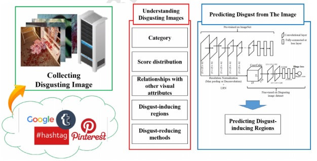

|

|
When viewers search for images on the internet, they may unexpectedly encounter disgusting or explicit images. As such images may result in mental suffering or trauma, predicting whether images will induce disgust in order to avoid such issues is desirable. However, formal definitions or insights as to what constitutes disgust-inducing visual factors do not exist. Consequently, eliminating disgusting images from retrieval results is still a challenge. In this paper, we collect a large-scale disgust-inducing image dataset containing approximately 60,000 images, each labeled with disgust scores and divided into image categories. Subsequently, using our dataset, we explore various attributes of disgust-inducing images, such as score distributions, categories of disgusting images, and relationships with other visual attributes. Then, we develop a new Convolutional Neural Network (CNN), called DiNet, that uses more than two pre-trained convolutional layers to consider local to global features for image representation. Experimental results indicate that the developed CNN architecture outperforms both feature-based learning models and state-of-the-art deep learning models with an accuracy of 67.58%. Furthermore, disgust maps extracted using the developed model facilitate an understanding of the disgust-inducing regions of images.
Sang-Il Oh and Hang-Bong Kang
Image and Vision Computing, online available now, 2018.03.12
[Paper] [BibTeX]
Sang-Il Oh and Hang-Bong Kang
[Download]